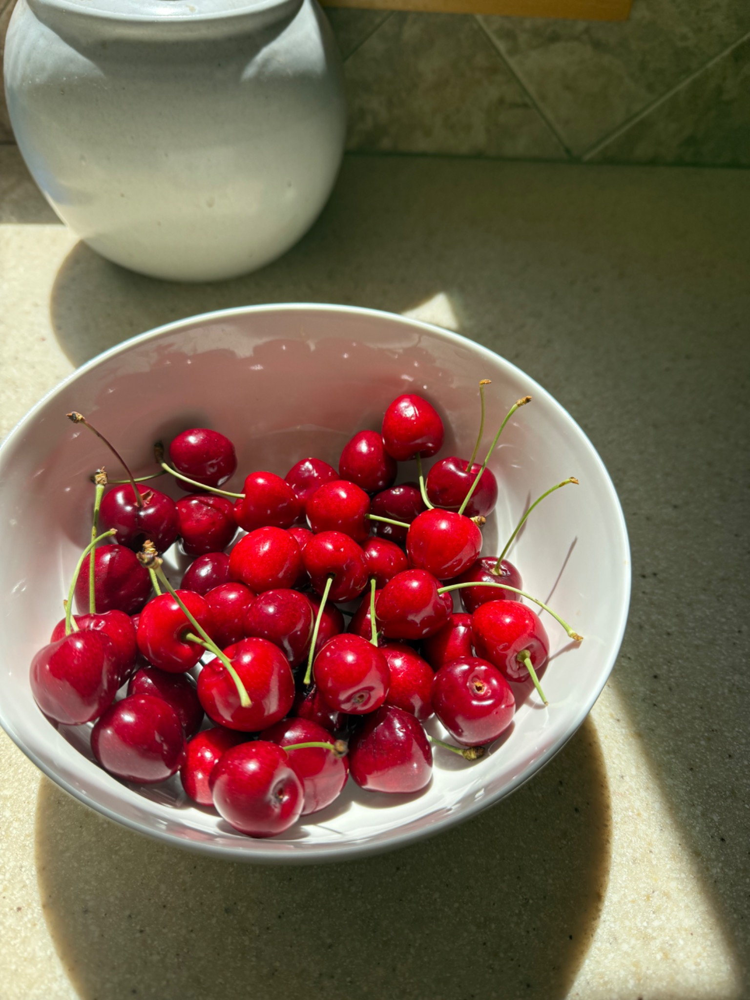
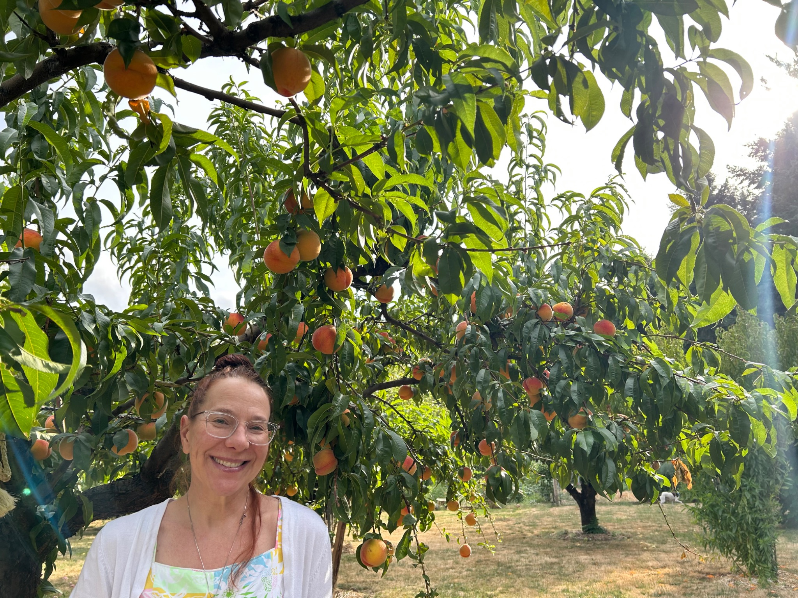
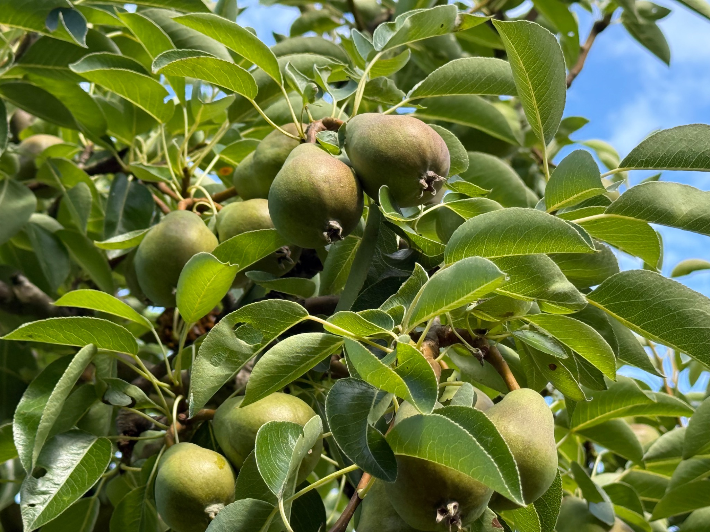
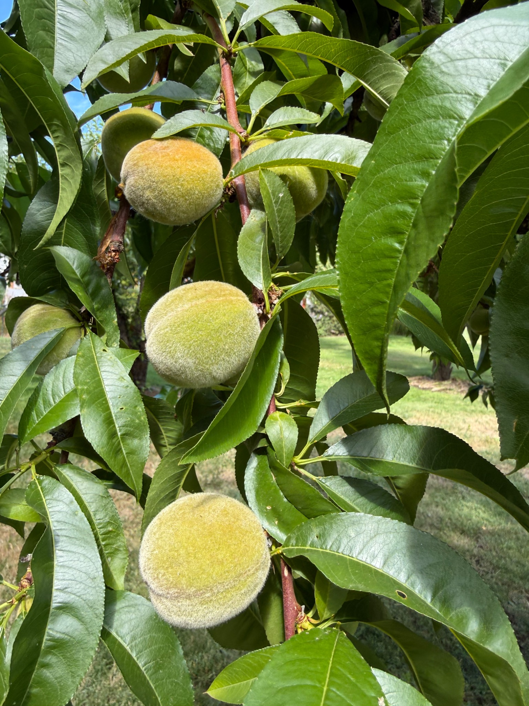
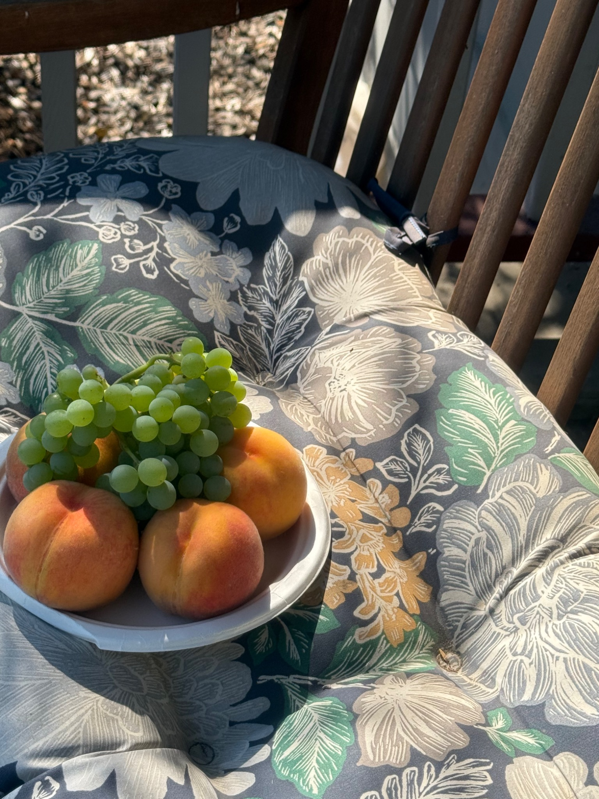
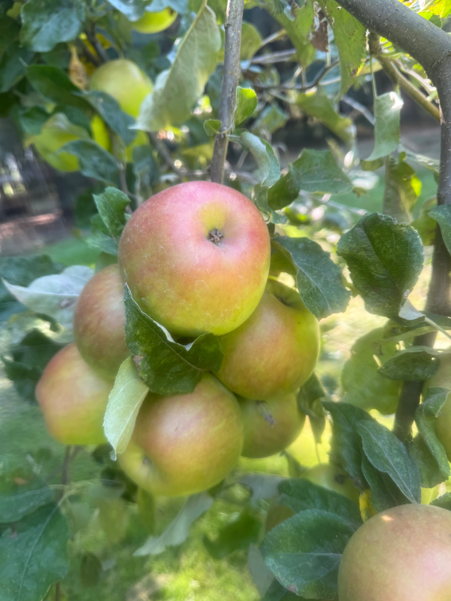

Cherries
Black cherries followed by Royal Anne.
Ripe June–July

For many years, I worked as a Product Manager and Human Factors consultant, helping people build technology that worked better for the humans using it.
These days, my office looks a little different. I am following a long-held dream of working with the land, caring for an established orchard on Kiger Island, and providing my local community with fresh, nutritious food.
Stem & Stone Orchard brings together thoughtful work, continual learning, and the simple pleasure of fruit grown close to home. I hope you will stop by, enjoy fruit from the orchard, and experience this special place for yourself.
Every crop has its own short, delicious season. Availability depends on the weather and the trees, which are notoriously unmoved by project plans.

Black cherries followed by Royal Anne.
Ripe June–July

These Bartlett gems are our main crop, and some of the best around.
Available August–September

These beauties come ripe in August.
August

Sweet and seedless—you would fight for these on a road trip.
Late August–September

Shiro: golden yellow, sweet and juicy like a peach. Wonderful fresh, dried, or made into jam.
Green Gage: not especially photogenic. It’s okay; they know. But boy, do they taste great—also stellar in plum butter and dried.
Mystery plum: Purple Gage? Come find out in September. We will all be awed at the reveal.
July–September

Honeycrisp is always a favorite. You know you love them; we do too. Our other tree is a mystery variety—not quite Granny Smith, with a little more color and sweetness.
Mid-August–October